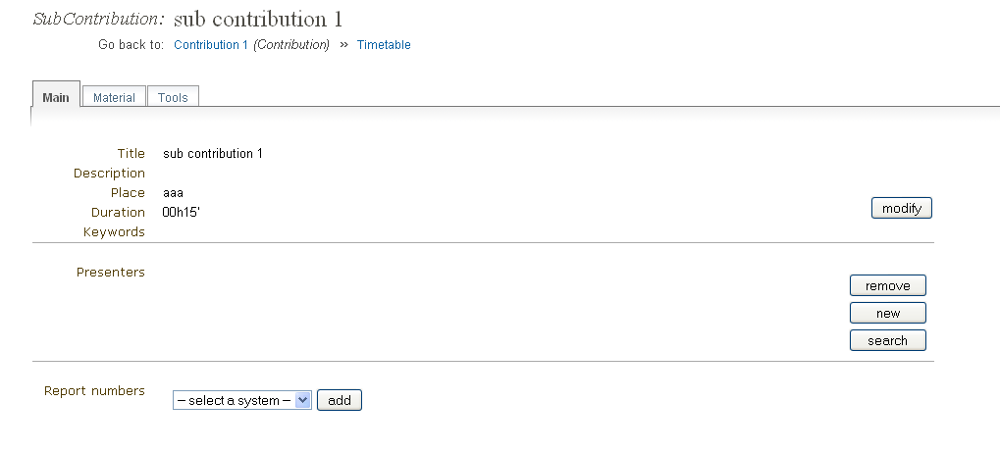
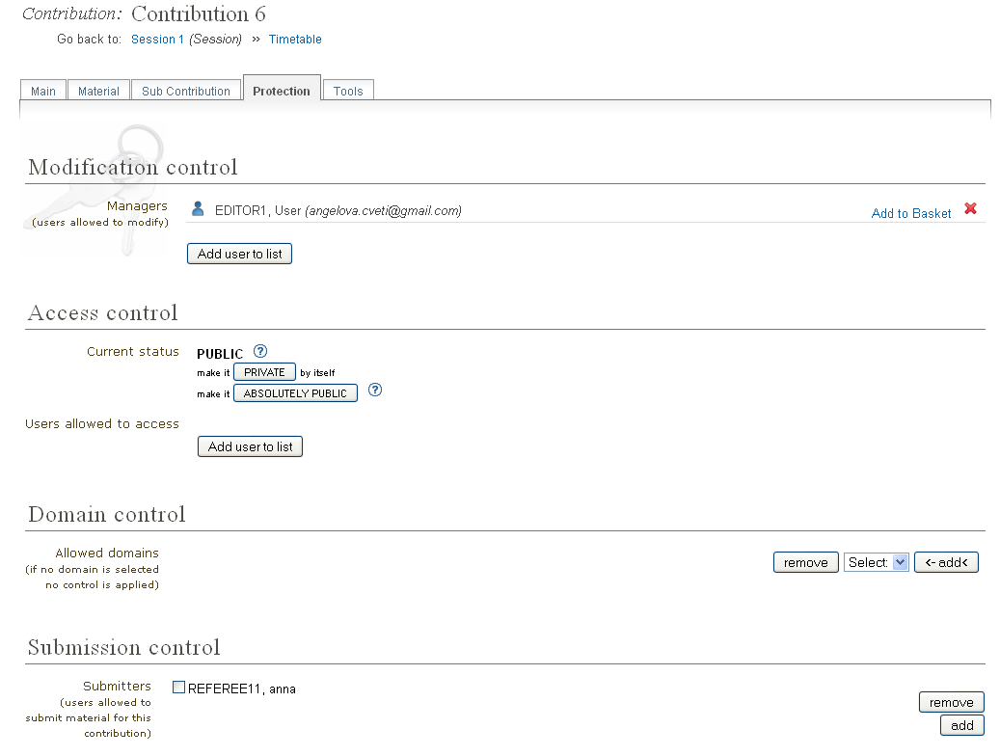
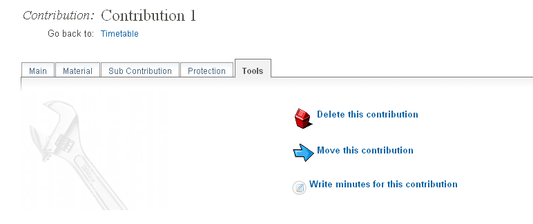

1.2.1. Main Tab¶
The Main tab contains all the data about the contribution itself.

The Contribution Mananager is responsible for managing the information in a contribution. Your are given contribution management access by either the Conference Manager, Session Manager, the existing Contribution Manager and possibly the Session Co-ordinator.
You can access your contribution by selecting Timetable from the menu in the event home page and finding your contribution. If you are the manager of that contribution you will see a pencil button. This will take you to your contribution management area.
Once in the contribution management area you can start managing your contribution using the following tabs.
This is just a quick start guide for contribution management, for an in-depth explanation please see Contributions in the Indico User Guide.
The sub contribution tab allows you to add and remove sub contributions.

Clicking on the title of a sub contribution will take you into its management area.
The access control tab allows you to add other contribution managers and to give permission for users to submit material for your contribution.

The tools tab allows you to delete the contribution, move the contribution, and write minutes for the contribution.
